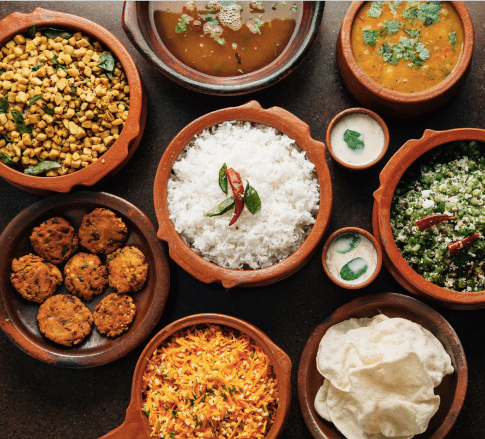

•⁃⁃⁃⁃ DISCOVER ⁃⁃⁃⁃•
Tale Of Our Tastes
EXPLORE THE ANECDOTE OF SAVOR, ZEST & RELISH
Wow Foodie Restaurant spanning over 3 branches in Chennai at Adayar, Egmore & T.Nagar
tells tales of culinary marvel that cast a spell over generations.
Established way back in 1960, the restaurant holds a rich heritage of serving scrumptious
spreads over decades to food lovers from every nook and corner of the world.
•⁃⁃⁃⁃ CUISINES ⁃⁃⁃⁃•

-
Grilled Paneer
Juicy chunks of paneer coated in sauces smothered with spices and perfectly grilled on skewers until it is slightly charred to crispy goodness. -
 Mac and Cheese Bites
Mac and Cheese Bites
Bite into the crunchy appetizers that fill your taste buds with cheesy goodness that makes you drool!
-
 Dosa
Dosa
Thin, fluffy and lacy crepes made with rice batter is a heavenly delight that just melts in your mouth. Revel in the appetizing delight! -
Sambar Rice
A wholesome spicy meal with savory masalas, tangy tamarinds, toothsome toor dal, and fresh vegetables.